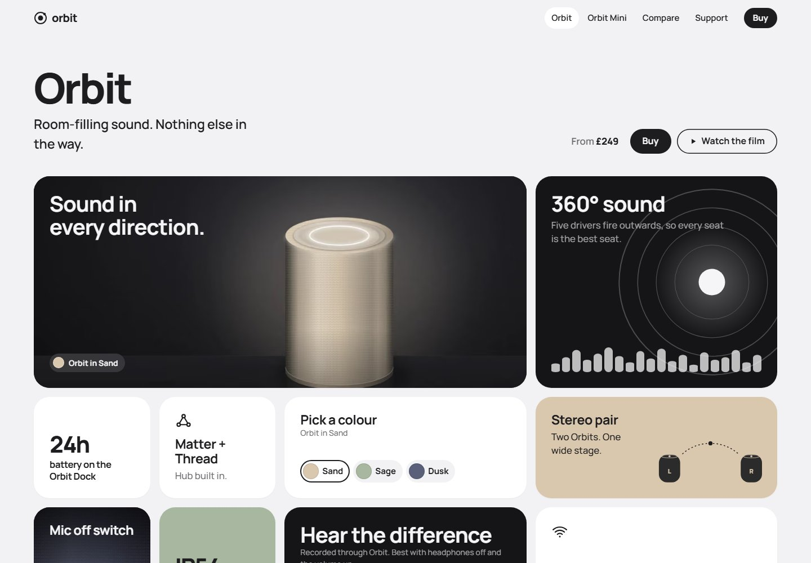

Design exploration / Bento grid
Orbit
A modular product story with colour selection, sound demos, and a layout-aware CMS studio.

The idea behind the interface.
Orbit is a fictional smart-speaker family presented through a responsive bento grid. Tile sizes establish a clear hierarchy, while product details, sound samples, and colour choices make the grid an interface rather than just a layout. Orbit Mini shares the same engine with its own composition.
Inside the build
- Five tile sizes and a dense CSS grid are checked against a placement model to prevent holes and preserve reading order.
- Colour choices stay synchronized across the hero, product links, and buy bar, and can be shared through the URL.
- A file-backed CMS studio supports tile ordering, per-breakpoint sizing, draft previews, and validated publishing.
Scope & context
Concept project. Orbit and its retailers are fictional. The checkout is a demonstration handoff, and the CMS studio is not production-authenticated.